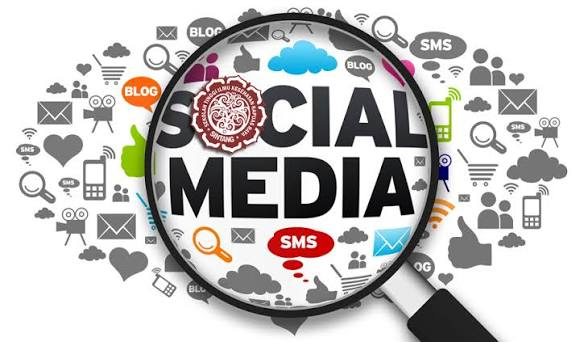
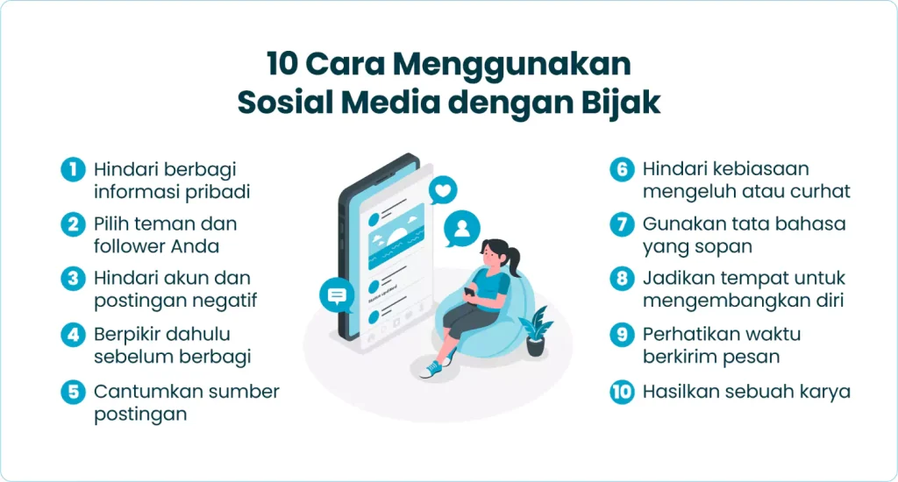

Bijak Menggunakan Media Sosial
Media sosial merupakan bagian penting dari kehidupan masyarakat modern. Dengan menggunakan media sosial secara tepat, kita dapat berkomunikasi, belajar, dan mendapatkan informasi dengan lebih mudah.
Apa Itu Media Sosial?
Media sosial adalah platform digital yang memungkinkan seseorang untuk berkomunikasi, berbagi informasi, membuat konten, dan berinteraksi dengan orang lain melalui internet. Saat ini terdapat berbagai macam media sosial yang digunakan oleh masyarakat, seperti Instagram, TikTok, YouTube, Facebook, WhatsApp, dan berbagai platform lainnya. Media sosial memberikan banyak kemudahan dalam kehidupan sehari-hari. Kita dapat berkomunikasi dengan teman dan keluarga yang berada jauh, mencari informasi mengenai berbagai topik, mengikuti perkembangan berita, serta mendapatkan hiburan.
Walaupun memiliki banyak manfaat, media sosial juga harus digunakan dengan bijaksana. Penggunaan yang tidak bertanggung jawab dapat menimbulkan berbagai masalah, seperti penyebaran berita palsu, perundungan atau cyberbullying, pencurian data pribadi, kecanduan internet, dan konflik akibat komentar yang tidak sopan. Oleh karena itu, setiap pengguna media sosial perlu memahami cara menggunakan media sosial dengan benar.

Cara Menggunakan Media Sosial dengan Benar
1. Berpikir Sebelum Memposting
Sebelum mengunggah foto, video, tulisan, atau komentar, sebaiknya kita berpikir terlebih dahulu. Tanyakan kepada diri sendiri apakah konten tersebut bermanfaat, benar, dan tidak merugikan orang lain. Ingat bahwa sesuatu yang sudah diunggah ke internet dapat disimpan atau disebarkan oleh orang lain. Karena itu, jangan mengunggah sesuatu secara terburu-buru hanya karena sedang mengikuti tren.
2. Menjaga Privasi dan Data Pribadi
Data pribadi harus dijaga dengan baik ketika menggunakan media sosial. Jangan membagikan informasi seperti kata sandi, PIN, alamat rumah, nomor identitas, atau informasi penting lainnya kepada orang yang tidak dikenal. Kita juga perlu menggunakan kata sandi yang kuat dan mengaktifkan fitur keamanan tambahan jika tersedia. Dengan menjaga privasi, risiko pencurian akun dan penyalahgunaan informasi pribadi dapat dikurangi.
3. Memeriksa Kebenaran Informasi
Tidak semua informasi yang kita lihat di media sosial adalah benar. Sebelum membagikan sebuah berita, periksa terlebih dahulu sumber dan kebenarannya. Jangan langsung percaya hanya karena informasi tersebut terlihat meyakinkan atau sudah banyak dibagikan. Membandingkan informasi dari beberapa sumber yang terpercaya dapat membantu kita menghindari penyebaran hoaks atau berita palsu.
4. Menggunakan Bahasa yang Sopan
Media sosial adalah tempat untuk berinteraksi dengan banyak orang yang memiliki latar belakang dan pendapat yang berbeda. Oleh sebab itu, kita harus menggunakan bahasa yang sopan ketika memberikan komentar atau menyampaikan pendapat. Perbedaan pendapat merupakan hal yang wajar, tetapi perbedaan tersebut tidak seharusnya menjadi alasan untuk menghina, mengancam, atau melakukan cyberbullying terhadap orang lain.
5. Mengatur Waktu Penggunaan
Penggunaan media sosial secara berlebihan dapat mengganggu kegiatan sehari-hari. Kita sebaiknya mengatur waktu agar penggunaan media sosial tidak mengganggu belajar, bekerja, berolahraga, tidur, maupun berinteraksi secara langsung dengan keluarga dan teman. Media sosial seharusnya menjadi alat yang membantu kehidupan kita, bukan sesuatu yang mengendalikan seluruh waktu kita.

Manfaat Menggunakan Media Sosial dengan Bijak
Jika digunakan dengan benar, media sosial dapat memberikan banyak manfaat. Dalam bidang pendidikan, media sosial dapat digunakan untuk mencari materi pembelajaran, mengikuti kelas atau komunitas pendidikan, dan berbagi pengetahuan. Dalam bidang komunikasi, media sosial membantu kita tetap terhubung dengan keluarga, teman, dan orang-orang dari berbagai daerah. Media sosial juga dapat digunakan untuk mengembangkan kreativitas melalui pembuatan foto, video, tulisan, desain, dan berbagai jenis konten lainnya.
Selain itu, media sosial dapat membantu seseorang mengembangkan peluang bisnis. Banyak orang menggunakan platform digital untuk memperkenalkan produk, membangun merek, dan berkomunikasi dengan pelanggan. Namun, kegiatan tersebut tetap harus dilakukan dengan jujur dan tidak menggunakan informasi palsu untuk menarik perhatian orang lain. Dengan sikap yang bertanggung jawab, media sosial dapat menjadi sarana yang sangat berguna untuk belajar, bekerja, berkarya, dan berkomunikasi.
Kesimpulan
Penggunaan media sosial yang benar membutuhkan kesadaran dan tanggung jawab dari setiap penggunanya. Kita perlu berpikir sebelum memposting, menjaga data pribadi, memeriksa kebenaran informasi, menggunakan bahasa yang sopan, dan mengatur waktu penggunaan media sosial. Kita juga harus menghormati orang lain serta tidak menggunakan media sosial untuk menyebarkan kebencian, penghinaan, atau berita palsu.
Pada akhirnya, media sosial bukanlah sesuatu yang harus dihindari. Media sosial dapat memberikan banyak manfaat jika digunakan secara bijaksana. Yang paling penting adalah bagaimana kita sebagai pengguna mampu memanfaatkan teknologi untuk hal-hal yang positif. Dengan menjadi pengguna media sosial yang cerdas, sopan, dan bertanggung jawab, kita dapat menciptakan lingkungan digital yang lebih aman, nyaman, dan bermanfaat bagi semua orang.